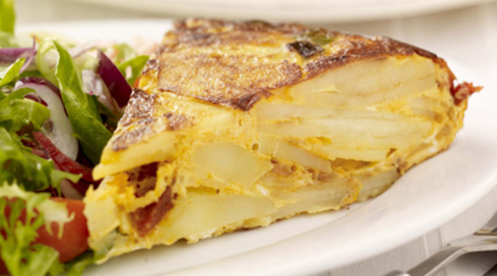

Spanish Omelette

Description
Spanish omelette or Spanish tortilla is a traditional dish from Spain and one of the signature dishes in the Spanish cuisine. It is an omelette made with eggs and potatoes, optionally including onion. ... It is commonly known in Spanish-speaking countries as tortilla de patatas, tortilla de papas or tortilla española.
Ingredients for the Spanish Omelette recipe to serve 4 people
- 4 potatoes
- 2 red onions
- 2 spring onions
- 4 eggs
- 1 tbsp ground turmeric
- 1/2 tsp salt
- 1/2 tsp pepper
Steps
- Slice the onions and cut potatoes into cubes.
- Paint a large tray with cooking oil and pour in the vegetables.
- Mix the eggs with spices and pour the mixture over the vegetables.
- Bake for 40/50 minutes in oven by 250 degrees.